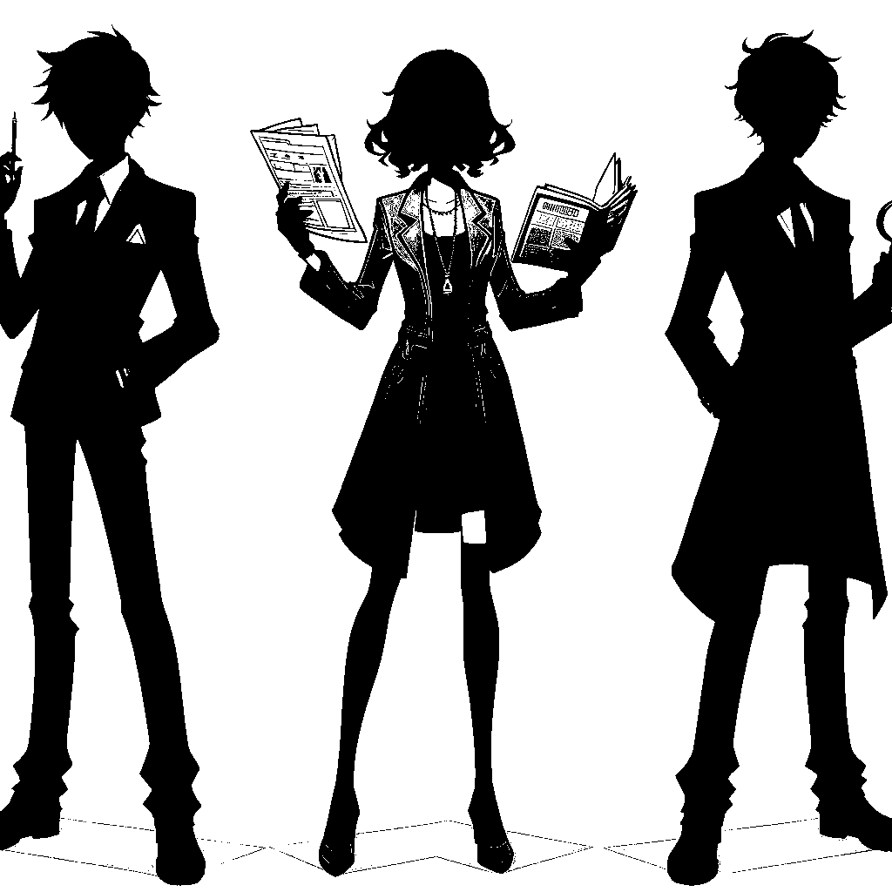

Three suspects in this case have attracted much attention:
Assistant - Max
As the victim's personal assistant, Max knew the victim's schedule and personal affairs well. He was also one of the few people who knew the contents of the manuscript. Max was threatened with dismissal after being accused of embezzling victims' funds. If the victim's new book reveals this, his career and reputation will be severely damaged.
Competitor - Elena
Elena is an author of other genre novels, but in recent years has turned to writing detective novels, and Victims is in direct competition for several literary awards. Elena may have been jealous of the victim's success and fame, and worried that the victim's new book launch would steal the spotlight from her upcoming work and affect her sales and reputation.
Passionate fan - Jonathan
Jonathan is a die-hard fan of the victim, often appears at the victim's autograph sessions and public events, and is very familiar with the victim's life. Jonathan has unrealistic expectations for his victim's new work. When he learns that the new work may reveal truths that could damage the image of his idol, he feels profound loss and betrayal, which may drive him to take extreme action.
View more